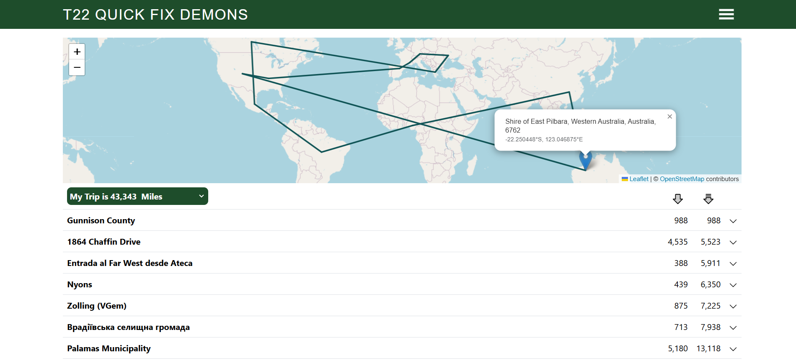
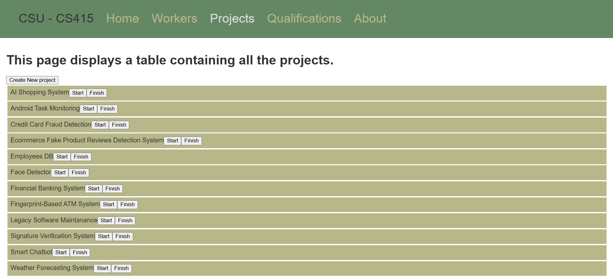
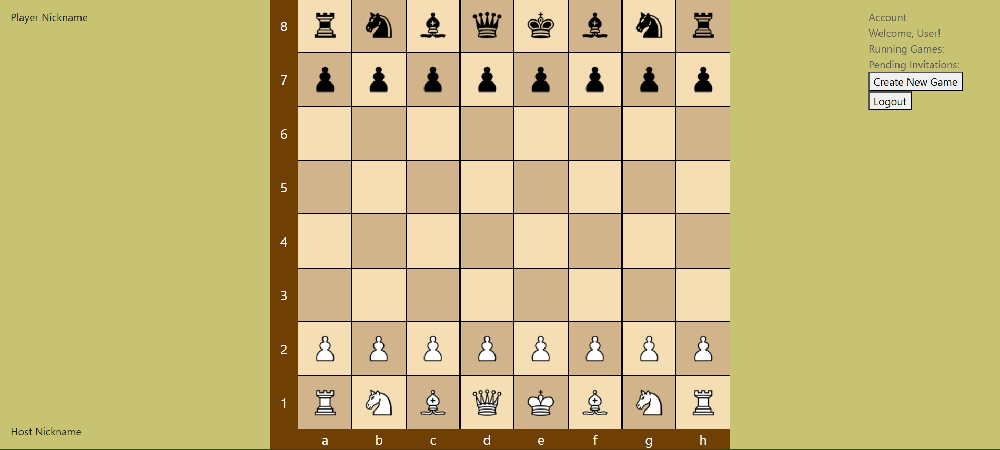

Coursework
CS 314: Software Engineering
CS 314, Software Engineering, was the first course I took that had the format of a single semester-long project, where students worked in groups to complete the tasks. The project that the course focused on was a trip planner with the goal of providing users with the shortest possible trip given a list of destinations. While programming was a large portion of the course, it was not the main point. Instead, it provided an introduction to various tools and techniques that software developers need to know outside of programming.
On the technical side of the course, version control systems, primarily Git and GitHub, were taught. Version control systems enable version control, which Atlassian defines as “... the practice of tracking and managing changes to software code.” Previous course projects were small in scale and complexity, so version control was not needed. This course introduced a large-scale project that also involved multiple contributors, so some manner of version control was necessary to keep all the modifications organized. The course also enforced the usage of GitHub best practices to ensure students got practice with proper GitHub etiquette.
Several non-technical skills were also taught. In particular, agile development practices, such as Scrum, were used. Agile development is a particular method of developing software that allows for changes in requirements to be quickly addressed in order to deliver a functional solution, according to Opentext. Scrum was the agile methodology used, which Scrum mentions being focused on a Scrum team with each member being responsible for different portions of the project’s development. While providing a structure for development, Scrum also provided a structure for teamwork, which had not been a point of note in previous courses. Of course, other courses had group projects, but this was the first course to truly require teamwork in order to be successful.
CS 415: Software Testing

CS 414: Object-Oriented Design
